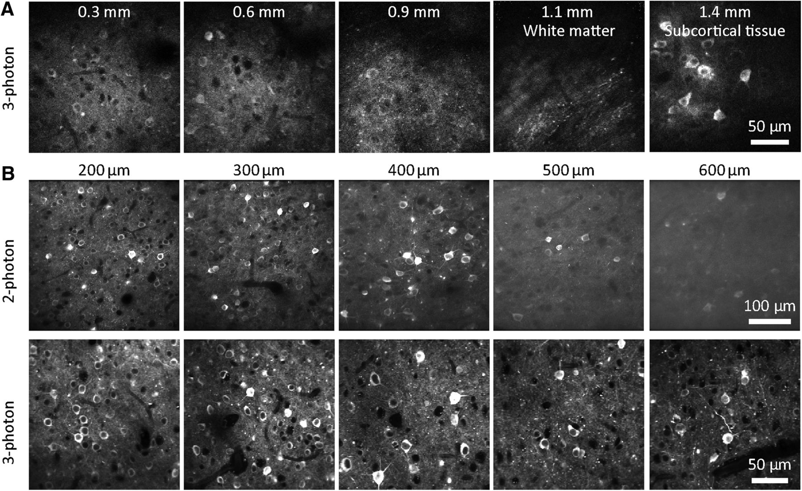
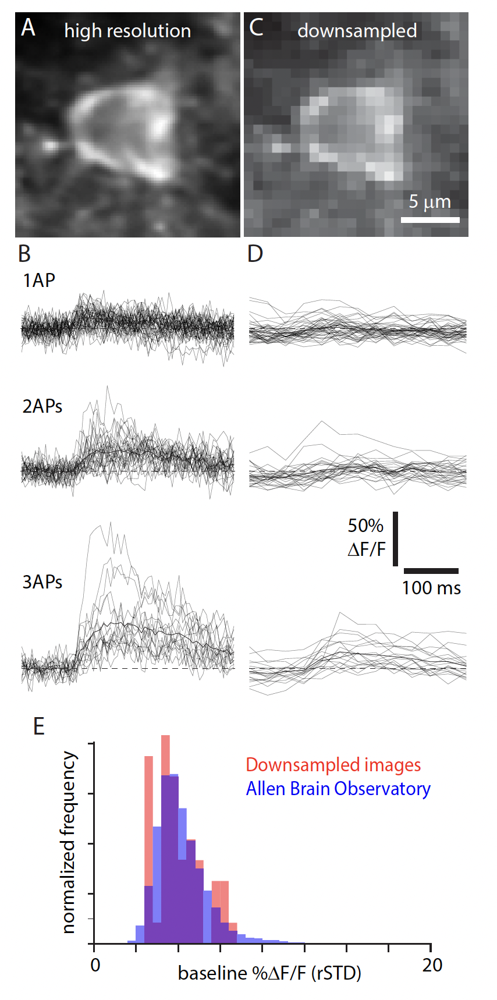
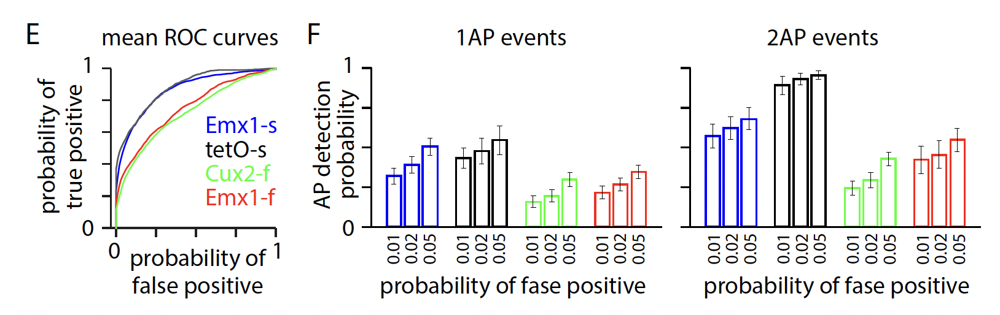
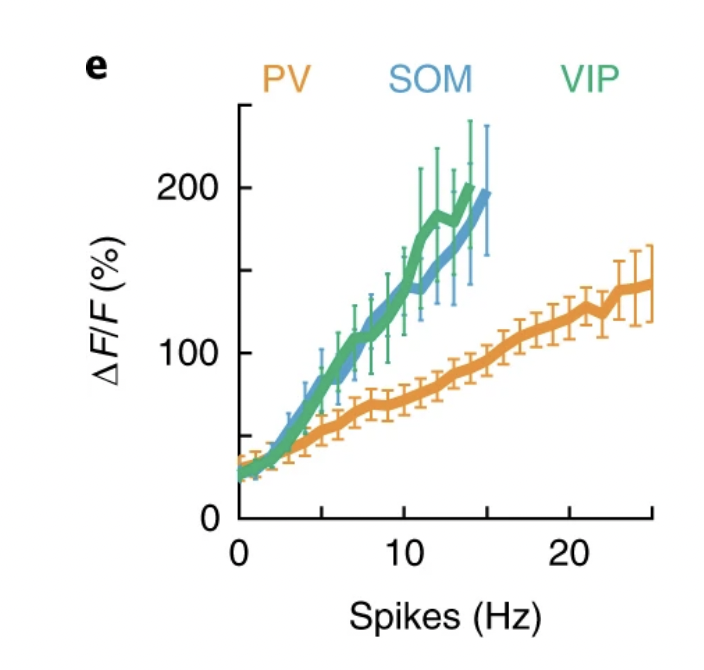

Calcium imaging#
Extracellular electrophysiology is just one of many methods that is used to measure activity from individual neurons. Another class of methods involve taking optical measurements of fluorescent compounds that change their properties in response to action potentials. Some compounds change their fluorescence as the membrane voltage changes, voltage indicators, and provide access to the same signal that intracellular electrodes measure. However, the field is still developing voltage indicators that have good optical properties, and as a result are not yet routinely used to measure neural activity in awake behaving animals. Action potentials trigger voltage-gated calcium channels (VGCCs) to open and increase the intracellular concentration of calcium. Unlike voltage indicators, there are many robust calcium indicators that provide good sensitivity and SNR, and allow experimenters to observe action potentials using fluorescence microscopy.
Fluorescence: translating calcium into light#
Central to calcium imaging is the concept of fluorescence. Calcium-sensitive dyes and genetically-encoded calcium indicators (GECIs) are introduced into neurons, which, upon binding to calcium, undergo changes in their fluorescence properties. By recording these changes, we obtain a dynamic picture of neural activity across populations of neurons, providing insights into how neural ensembles encode, process, and transmit information.
Advantages in the context of systems neuroscience#
Granular view: Calcium imaging enables a detailed view of neural populations, capturing the dynamics of hundreds to thousands of neurons simultaneously. Better yet, some microscopes can resolve individual synapses or other cellular compartments.
Cell-type specificity: Thanks to advances in molecular biology, we can target GECIs to specific neuron types, granting us the power to dissect neural circuits with cell-type precision.
Temporal insights: While the temporal resolution of calcium imaging doesn’t match that of direct electrical recordings, indicators have become faster over each generation. Even compartively “slow” indicators such as GCaMP6s are still fast enough to detect when a group of action potentials occur, even if it is difficult to discern individual action potentials.
Longitudinal recordings: Because you can see the shape of individual cells, their arrangement with respect to eachother, and other tissue featuers like vasculature, experimenters can measure the activity of the same neurons over days. This can provide insight into how neural activity changes over the course of learning.
Two-photon calcium imaging#
Brains are three dimensional, so microscopy methods that can resolve fluorescence in three dimensions improve our measurements of neurons in intact brains. While wide-field microscopy can still be used on three-dimensional structures, contrast and resolution are hampered by scattering and out-of-focus fluorescence. Confocal imaging rejects out-of-focus light (i.e. provides optical sectioning), but excites large amount of tissue that is not being imaged, and also rejects photons emitted by the tissue being imaged but are scattered by the tissue. In contrast, two-photon excitation microscopy, or two-photon microscopy for short, uses two photons with longer wavelengths than the emitted light to excite a fluorophore [Denk et al., 1990]. With two-photon excitation, the absorption is a nonlinear function of photon density, allowing microscopes to only excite a single voxel of tissue at a time. This improves our ability to image the activity of GECI expressing neurons in intact tissue.
There are limits to what we can see using two-photon miscroscopy, however. Two-photon excitation generates fluorescence primarily from the focal plane, but out-of-focus fluorescence from outside the focal plane will contaminate the view. This out-of-focus fluorescence increases as the focus is pushed deeper into tissue [Takasaki et al., 2020]. This can be problematic when imaging densely expressed GECIs where there is fluoresence throughout the tissue, where the image quality degrades with imaging depth. However, using Cre lines that limit the GECI expression only to deep neurons (e.g. Cre lines specific to layer 5 or layer 6 pyramidal neurons) can avoid this problem.

Event detection#
The spatial and temporal resolution of the imaging conditions determine the ability to resolve individual, or even small numbers of, spikes. Validation datasets, in which individual neurons are imaged using 2-photon calcium imagine at the same time as intracellular voltage recordings are made using patch clamp techniques, usually collect data with high spatial and temporal resolution. At these resolutions, single action potentials are discernable from the fluoresence traces. However, population recordings like the ones in our Visual Coding 2-photon and Visual Behavior Ophys datasets, are routinely made with lower spatial and temporal resolutions. This allows us to image large populations of neurons. But, the result is an inability to reliably resolve low firing rate events [Huang et al., 2021].

There are several algorithms for detecting “events” based on the DF/F traces. We used a L0 method described in [Jewell and Witten, 2018]. At the downsampled imaging resolution, the ability to detect 1- or 2-AP events is relatively low, particularly for data collected with GCaMP6f.

The validation dataset above examines closely the relationship between extracted events and firing rate for excitatory neurons and how that depends on the spatial and temporal resolution [Huang et al., 2021]. This relationship is different for inhibitory Interneurons. Specifically, the relationship between fluorescence and firing rate is different for parvalbumin-positive interneurons than it is for Somatostatin cells and VIP cells [Khan et al., 2018]. Parvalbumin is a calcium buffer and calcium imaging data of these neurons should be considered judiciously. While general increases/decreases in activity are reflected in the fluorescence signal, analyses focused on more precise event rate estimates and temporal precision should likely be avoided for these PV neurons.
